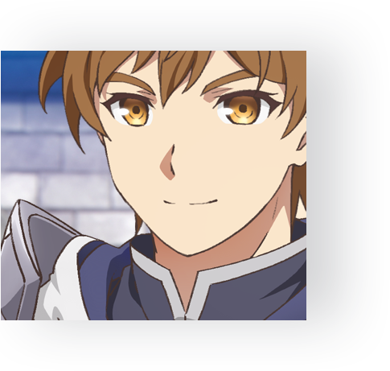
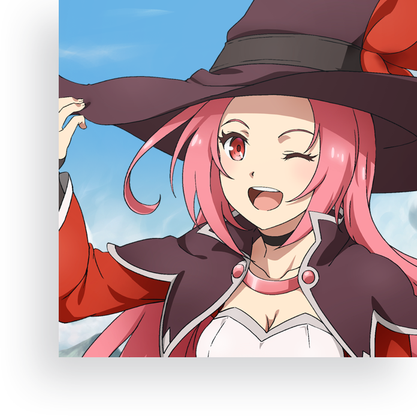
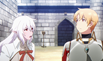

The story that captured the hearts of 15 million players!
TV Animation <King's Raid: Successors of the Will>
TV Animation
King's Raid:
Successors of the Will
Created by the Goddess of Light <Lua>,
the Orbis Continent accounts for more than half of
the world, and it is the place where humans and
various races live. The story takes place in the
<Kingdom of Orvelia>, a country that produced
King Kyle who bravely fought in the war against
the invasion from the Dark Lord that came from
the Pandemonium 100 years ago, <Angmund>.
Kyle and his comrades from other races stood
against the Dark Legion and defeated Angmund
at last, but Kyle too disappears from the battlefield.


A squire named Kasel was living in the Kingdom of Orvelia that
was enjoying the period of peace ever since King Kyle had
defeated the Dark Lord Angmund 100 years ago.
However, his fate begins to turn as he hears the news that
Demons have appeared in the vicinity. At the request of
the Great Sage, Kasel and his dependable comrades set
off on a journey to find the sealed Holy Sword.
ON AIR
 Episodes
Episodes
| Network | Air Date | Airtime |
|---|---|---|
| FunimationNOW | 20.10.03(매주 토요일) ~ | AM 02:23 ~ |
STORY

- Episode 1 : The Demons that Lurk in the Moonlight It's been 100 years since the Dark Lord Angmund has fallen by the king of Orvelia, Kyle. Kasel, a squire of the Guardian Knights, has been receiving his daily training by his senior Clause to become a knight that can protect people dear to him. Meanwhile, there is news that Demons that should've disappeared from the King's Forest of Orvelia have appeared again. As Clause and his troops are being dispatched to the forest to inspect the Demons, Kasel wishes him luck and awaits his return.
- Episode 2 : The Truth, Revealed In order to save his comrades, Kasel proceeds to the King's Forest with his childhood friend and a priestess, Frey. However, what they saw in the forest was the corpse of his comrades and Clause's shield. While they were driven to despair, a group of Demons suddenly approaches them. The Black Edge, the mercenary hired by Orvelia saves them, but Kasel becomes frustrated with his helplessness as a squire. Then, a wizard who calls herself Cleo and her escort, Roi appear and claim that they came to take Kasel and Frey to a certain place.
- 
- Episode 3 : What the Predecessors Left Behind Led by Cleo and Roi, Kasel and Frey arrive at the [Tower of Sage], a gigantic island floating between the clouds. It was Dominix the Great Sage that wanted them here. And Kasel hears the momentous fact from Dominix - 100 years ago, King Kyle of Orvelia formed an alliance with Elfs and Orcs to exterminate the Demons that were invading and attacking humans. Then, Kasel finds out that King Kyle confronted the leader of the Demons, the Dark Lord Angmund with the Holy Sword bestowed by the Goddess of Light, Lua.

- Episode 4 : The Forest and the Elves After discovering his origin, Kasel desires to get the Holy Sword. Then, Kasel, Frey, Cleo, and Roi arrive at Elidora's Forest to find the first key that can unleash the Holy Sword, Aea, and meet the Great Sage of Elidora's Forest, Lorraine. Then, an Elf named Selene appears and tells them that she would guide them to Lorraine. However, Kasel and his party lose Selene on their way. Elidora's Forest, alias [Forest of Delusion], is famous for Elfs and Treants misbehaving to delude the travelers. That was when a small Treant appeared before the bewildered Kasel and his party.
- Episode 5 : The Power of the Holy Sword The Great Sage Lorraine appears in front of Kasel and his party that came to Elidora's Forest to acquire the first key that unleashes the Holy Sword, Aea. However, instead of unleashing the Holy Sword, Lorraine called Selene and asked if [Kasel is worthy of acquiring the power of the Holy Sword, Aea]. What would be Selene's answer after she watched Kasel going berserk when a Treant was slain by a Demon?
- Episode 6 : The Maven of Fire After unleashing the Holy Sword for the first time, Kasel and his party have been traveling to the Ogria Mountain to meet Aeatola, who holds the second key that unleashes the Holy Sword. Meanwhile, they decide to visit the tourist city called Holtshuten for a rest. Cleo becomes exhilarated as this was one of the cities that Cleo wanted to go after reading about it in the past.
- Episode 7 : The Destination of Hatred The Black Edge is the mercenary hired by the Kingdom of Orvelia that makes a contribution by suppressing the Demons with El Moriham. Riheet was recruited by the supreme commander of the Orvelian Knights to [fight along as part of the Knights], but their real purpose was to take over Orvelia. Although the Black Edge was acting like an ally and gradually earning the trust of townspeople through the suppression of the Demons, some weren't pleased.
- Episode 8 : The Memory of the Eye A girl appears before Kasel and his party as they were heading towards to the Ogria Mountain. Frey senses something from this girl who came from a refuge where the people that fled from the town that Demons have swept were gathered. Frey persuades everyone to spend the night at the refuge. Why did Frey make a sudden request..? And again, the great darkness that spreads through the world awakens.

CHARAC
TERS
- Major
- The Guardian Knights of Orvel
- Black Edge
- Others
Kasel
He is training every day to become a strong knight that
can protect everyone. He spent his childhood with Frey
and Clause at the same facility, and he thinks of them as
his family. After finding out that Clause hasn't returned
after he had joined the expedition, Kasel decides to go
on a journey to save Clause.


STAFF
- STAFF
- CAST
- Original : VESPA
- Director : Makoto Hoshino
- Scenario : Megumi Shimizu
- Character Design : Animation Director, Tatsuya Arai
- Monster Design : Yuu Yoshiyama
- Art Director : Shigemi Ikeda, Yukiko Maruyama
- Color Coordinator : Makiko Kojima
- Director of Photography : Gaku Hirooka
- Editor : Naoki Watanabe
- Music : Masahiro Tokuda
- Sound Director : Takatoshi Hamano
- Animation Production : OLM×SUNRISE BEYOND
- Production : King's Raid Production Committee
- Kasel： Kaito Ishikawa (石川 界人)
- Frey：Ai Kakuma (加隈 亜衣)
- Cleo：Ari Ozawa (小澤 亜李)
- Roi：Kengo Kawanishi (河西 健吾)
- Scarlet：Mitsuki Nakae (中恵 光城)
- Demia：Mika Kanda (神田 みか)
- Clause : Takuma Terashima (寺島 拓篤)
- Riheet： Ryota Suzuki (鈴木 凌汰)
- Ripine ： Yoshino Nanjo (南條 愛乃)
- Tom : Gen Sato (佐藤 元)
- Azar : Taishi Murata (村田 太志)
- Zukka : Hinata Tadokoro (田所 陽向)
- El Moriham : Shunsuke Sakuya (咲野 俊介)
- Theo : Shun Horie (堀江 瞬)
- Dominix ： Ryotaro Okiayu (置鮎 龍太郎)
- Malduk：Kentaro Ito (伊藤 健太郎)
- Kyle : Masaya Matsukaze (松風 雅也)
- Maria：Sakura Nakamura (中村 桜)
- Lorraine : Emi Hirayama (平山 笑美)
- Selene : Juri Nagatsuma (長妻 樹里)
- Ophelia : Takako Tanaka (田中 貴子)
- Jane : Moe Toyota (豊田 萌絵)
- Reina : Yuuki Takada (高田 憂希)
- Elize : Riho Iida (飯田 里穂)
- Pavel ： Yuki Inoue (井上 雄貴)
- Kaulah : Shinobu Matsumoto (松本 忍)
MUSIC
- OPENING
- ENDING
opening thema
legendary future
listening to the music
fripSide
南條 愛乃
八木沼 悟志
2020.11.4 Release
fripSide New Single 「legendary future」
・Opening Theme of TV animation [King's Raid: Successors of the Will]
First release limited edition(CD+DVD): GNCA-0616 ￥1,980 without tax ￥1,800
Regular version：GNCA-0617 ￥1,320 without tax ￥1,200
・First release limited edition bonus：MV will be included in DVD
Ending Theme
SticK Out
listening to the music
KOTOKO
南條 愛乃
八木沼 悟志
2020-11-17 Release
KOTOKO New Single「SticK Out」
・Ending Theme of TV animation [King's Raid: Successors of the Will]
・First release limited edition CD＋DVD) GNCA-0618 ￥1800without tax
Regular version GNCA-0619 ￥1200
* First release limited edition bonus (DVD) MV will be included 【Distribution Info】
'SticK Out' Pre-Download https://lnk.to/stickout 収録曲
M1：SticK Out （作詞：KOTOKO、作曲：DECO*27、編曲：Rockwell）
M2：初雪ディスタンス （作詞・作曲：KOTOKO、編曲：Ｃ.Ｇ mix）
M3：SticK Out（instrumental）
M4：初雪ディスタンス（instrumental）
the adventure
King's Raid with 15 million players!
Download Now!